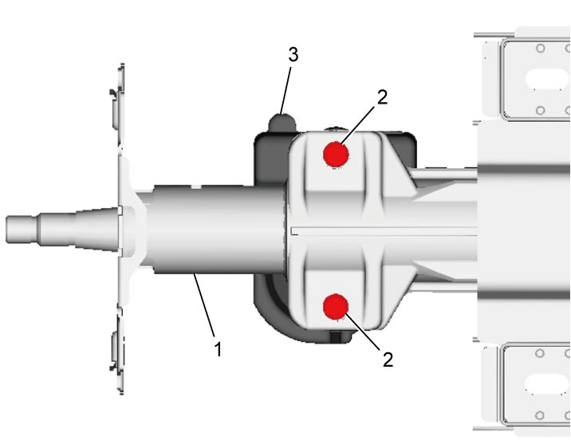
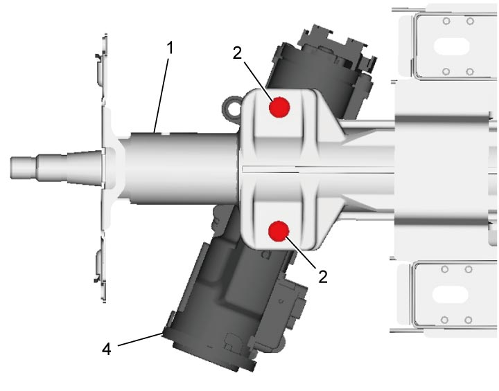
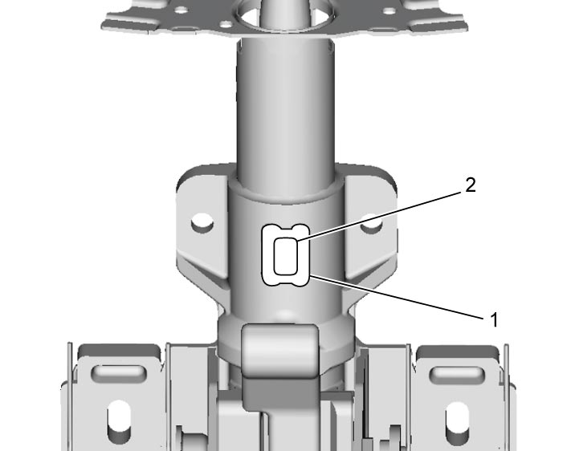
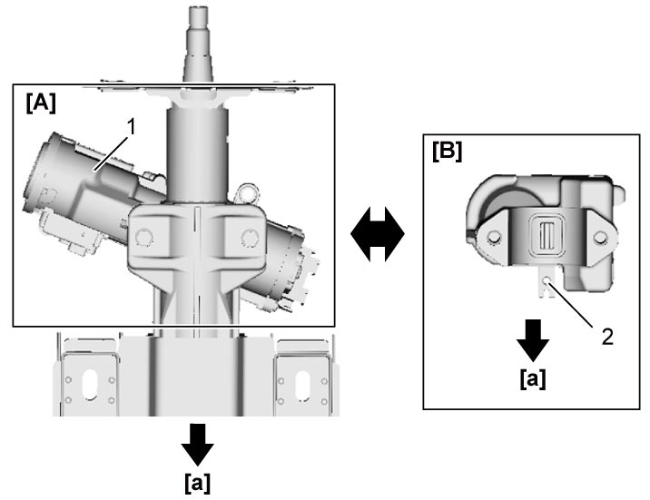
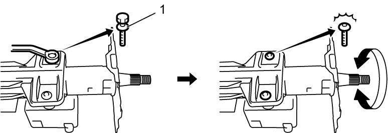

6B
| Steering Lock Removal and Installation |
Removal
Steering lock is made of magnesium.
Drilling, cutting or filing the steering lock may spark to ignite magnesium powder, causing a fire or burn.
Do not perform drilling, cutting or filing magnesium powder on the steering lock.
NOTICE:
Failure to take the following precautions when removing or installing the steering lock can cause failure of the steering lock.
•Do not drop or otherwise expose the steering lock to large shock. Any steering lock that has received large shock should be replaced.
•Keep the steering column and/or the steering lock free of oil, water, dust or other foreign materials.
•Keep the steering column and/or the steering lock free of oil, water, dust or other foreign materials.
1)Remove steering column. 
2)Hold steering column using vise.
3)Loosen steering lock bolts (2) using chisel, and then remove auto steering lock (3) or steering lock (4) from steering column (1).

Keyless push start model

 "Expand image")
Ignition switch model

 "Expand image")
Installation
1)For ignition switch model: Align oblong hole (2) in steering shaft with center of hole (1) in steering column.
Turn ignition key to “LOCK” position and pull it out, and then align lug of steering lock with hole in steering shaft.
Turn ignition key to “LOCK” position and pull it out, and then align lug of steering lock with hole in steering shaft.

 "Expand image")
2)For ignition switch model: Install steering lock to steering shaft with key cylinder (1) toward steering wheel.
For keyless push start model: Install auto steering lock with the column cover mounting screw hole (2) toward vehicle front.
For keyless push start model: Install auto steering lock with the column cover mounting screw hole (2) toward vehicle front.

 "Expand image")
| [A]: | Steering lock | [a]: | Vehicle front |
| [B]: | Auto steering lock |
3)Tighten new steering lock bolts (1) until head of each bolt is broken off.

 "Expand image")
4)Check steering column. If faulty condition is found, replace steering column assembly.
5)Install steering column.
6)Set ignition “ACC” or “ON” and check that steering wheel rotates smoothly. Then set ignition “LOCK” (“OFF”) (and pull out key for ignition switch model) and check that steering wheel is locked.
7)For ignition switch model: If ignition switch cylinder has been replaced, register ignition key transponder code in BCM after completing installation.
8)Check torque sensor. If faulty condition is found, replace steering column assembly.